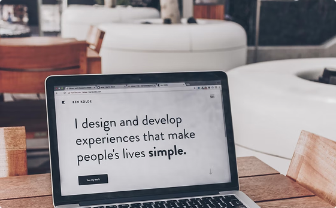

Recent posts
Blog one
I'm excited to start a new learning journey as a Scrimba Bootcamp student! After several months of learning in the Frontend Developer Career Path.
JULY 23, 2022
Blog two
I'm excited to start a new learning journey as a Scrimba Bootcamp student! After several months of learning in the Frontend Developer Career Path.
JULY 23, 2022
Blog three
I'm excited to start a new learning journey as a Scrimba Bootcamp student! After several months of learning in the Frontend Developer Career Path.
JULY 23, 2022